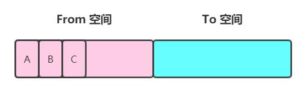
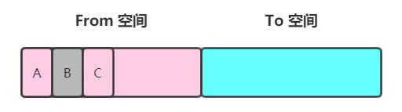
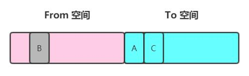
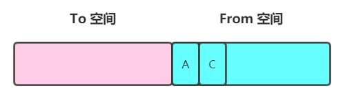
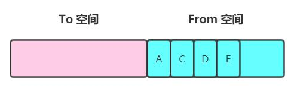
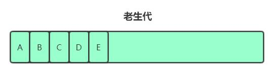
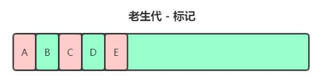
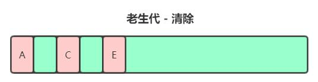

V8 内存限制
V8 只能使用系统的一部分内存，具体来说，在 64 位系统下，V8 能分配的约 1.4G ，在 32 位系统中，能分配的约 700M 。
我们知道对于栈内存而言，当 ESP 指针下移，也就是上下文切换之后，栈顶的空间会自动被回收；但是对于堆内存而言就比较复杂了，下面我们就来分析一下：
首先所有 Object 类型的数据在 JavaScript 中都是通过堆进行空间分配的。当我们构造出一个对象进行赋值操作的时候，其实对应的内存已经被分配到了堆上。你可以这样不断地创建对象让 V8 为它分配内存空间，直到达到堆内存的上限。
那么问题来了，V8 为什么要给它设置上限？明明我机器几十 G 的内存，只能让我用这么一点？
究其根本，其实是由 2 个因素共同决定的，一是 JavaScript 单线程执行机制，二是 V8 垃圾回收机制。
首先 JavaScript 是单线程运行，那么在执行垃圾回收的时候，其它的运行逻辑都会被暂停，另外垃圾回收实际是很耗时的操作，V8 官方是这么描述的：
在 Chrome 中，我们致力于提供每秒 60 帧（FPS）的流畅视觉体验。尽管 V8 已经尝试在较小的块中执行垃圾回收，但是较大的垃圾回收操作可能并且确实会在不可预测的时间（有时是在动画的中间）发生，从而暂停执行并阻止 Chrome 达到 60 FPS 的目标。
所以其它逻辑的代码一旦不能在有效时间内进行响应，就会造成应用卡顿，从而导致应用性能的下降。
深入研究 V8 的垃圾收集引擎
V8 使用了代垃圾回收器，其中的 Javascript 堆分为新分配的对象的年轻小一代和长期存在的对象的大老一代。由于大多数对象都死于年轻，因此这种世代相传的策略使垃圾收集器能够在较小的年轻世代（称为清道夫）中执行常规的短时间垃圾收集，而不必在老一代中跟踪对象。
新生代采用半空间分配策略，其中新对象最初是在新生代的活动半空间中分配的（ From ），一旦该半空间变满，清除操作会将活动对象移动到另一半空间（ To ），接下来我会结合流程来详细说明 Scavenge 算法是怎么工作的。（ 其中 GC 代表垃圾回收器，全拼 Garbage Collection ）
Step 1 ： 产生了 3 个新对象 A、B、C，分配到 From 空间

Step 2 ： 一定周期之后执行垃圾回收，GC 判断 B 没有被全局引用，可被回收，A、C 依然为活跃对象

Step 3： 将活跃对象 A、C 从 From 空间移动到 To 空间

Step 4： 清空 From 空间的全部内存，交换 From 空间和 To 空间

Step 5： 又新增了 2 个新对象，在 From 空间为它们分配内存

以上步骤就是 Scavenge 的一个周期，当一个对象经过多次移动仍然存活且 To 空间使用率超过 25% 时，它会被认为是生命周期较长的对象，而这种生命周期较长的对象则会被移动到老生代中，采用新的算法进行管理。
由于 Scavenge 是典型的的牺牲空间换取时间的算法，所以无法大规模应用到所有的垃圾回收中。但我们可以看到，Scavenge 非常适合新生代，因为新生代生命周期较短，恰恰适合这个算法，但老生代就不一样了，我们来看 V8 官方描述的一段话：
当旧代中活动对象的大小超出启发式限制时，将执行整个堆的主要收集。老一代使用带有多种优化功能的标记清除收集器来改善延迟和内存消耗。标记等待时间取决于必须标记的活动对象的数量，对于大型 Web 应用程序，标记整个堆可能要花费 100 毫秒以上。为了避免长时间中断主线程，V8 长期以来具有以许多小步长增量标记活动对象的能力，目的是将每个标记步长保持在 5 ms 以下。
V8 老生代主要采用 标记清除（Mark-Sweep）和 标记整理（Mark-Compact）相结合的方式进行垃圾回收。下面我们一样还是通过流程来说明。
Step 1： 老生代有存活对象 A、B、C、D、E

Step 2： GC 进入标记阶段，将 A、C、E 标记为存活对象

Step 3： GC 进入清除阶段，回收掉死亡的 B、D 对象所占用的空间

那么问题就出来了，在进行了一次 标记清除（Mark-Sweep）后，内存空间会出现不连续的状态，这就称之为 内存碎片，这种碎片会对后面连续内存的分配造成问题，极易造成提前触发下一轮垃圾回收，给 V8 性能带来压力。
Reference： https://v8.dev/blog/free-garbage-collection